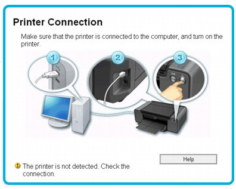

HP Laserjet Pro m402n Support
- Driver and Manual Download
- Setup and Installation
- Wireless Setup
- Ink cartridge
- Troubleshooting
- Firmware update
- AirPrint
Driver Download
The driver is an essential part of the printer. Without the driver, you cannot use your printer to perform any task. It’s like a human without a heart. You need to install at least the basic driver and software for your printer. If you want to get full printer functionality, you need to download and install the full feature driver and software for the printer. Get directed to our website, click on the Software Download button to download it. Once you are downloaded, you need to install it on your computer in which you stored your document for printing.
Manual Download
Manual is the best guide for the user who doesn’t have the knowledge about the printer. When you buy a new printer, you need to setup. Without setting up the printer, you cannot use it. To setup your printer, you need not search for the assistance to help you. Just download the user manual from our website, it helps you to setup your printer by yourself. If you come across any error while setting up your printer, you need not worry about that. Use the tips which are given in our manual to resolve the issue easily and quickly.
Setup and Installation
Without setting up the hardware and installing the software for the printer, you cannot use your printer to perform any task. Make use of this document which helps you to setup and install the printer easily.
- When you receive a new printer from the shipment, you need to unpack it.
- Take off the printer and its components from the shipment box.
- Peel off all the tapes, stickers and packing material from the printer and its accessories.
- Open the input tray and place the papers on the tray. Use the papers which are compatible with the printer.
- Prior to loading it, check its type and size. If its match with your printer, you can proceed.
- Or else, move to the print settings and modify the paper type and size.
- Connect the printer and the computer using a network cable which came with your printer.
- Open the ink cartridge access door. Install the black ink cartridge into the right side of the slot.

- Position the color ink cartridge into the left side of the slot. Once you are done, lock the ink cartridge access door.
- Ensure that the cartridge you have placed is dust free and free from debris.
Windows
- Install an appropriate driver and software for your printer.
- Use the installation CD which came with your printer to install the driver.
- Place the CD on the computer disc driver, run and execute the file.
- Agree with the Terms and Conditions and click on the Continue option. If you couldn’t install it, use another method.
- Download the recent printer driver and software from our website.
- Ensure that you download the .exe file type. Based on the OS file type gets varied.
- Install it based on the guides displayed on the screen. Look for devices under Windows and tap Devices and Printers.
- Select Add a printer. If you find your printer in the list, select Next and use the on-screen guides.
- In case your printer is not in the list, click Add a printer using TCP/IP address and tap Next.
- Choose Autodetect from the Device type drop-down list. Index your printer IP address and select Next.
- Halt for the system to link to the printer and then select Next to install the printer driver.
- During installation, you need to choose the connection type.
- You can choose either a Wired network connection or use a Wireless network connection.
- If you use the Wireless network connection, you can also avail the benefit of mobile printing.
Mac
- Configure the suitable driver and software for your printer.
- To install the driver on your system, make use of the installation CD which came with your printer.
- Insert the CD into the computer disc drive. Open the file, run and execute it.
- You need to agree with the Terms and Conditions for installing the driver. Once you are done, click on the Continue option.
- If the CD doesn’t work, download the updated driver and software from our website.
- You need to download only the .dmg file type for your Mac device.
- After downloading, install it according to the on-screen instructions. Select the Apple menu and tap System Preferences.
- If you find your printer in the list, exclude and re-add your printer to check the communication.
- Use the minus sign to remove your printer and click on the plus sign to add your printer.
- Select the Use or Print Using option, choose your printer name.
- Select Add to add your printer to the list. During the software installation, you need to choose the connection.
- Choose either a Wired network connection or a Wireless connection.
- Once you are done, you have completed the installation process successfully.
- Try to print a sample document using your printer to check its performance.
- To get more information, consult our tech experts on toll-free.
Wireless Setup
Configure your Wireless capable printer on a local wireless network with a Windows computer. Print your document or photo from any place at any time. Make use of the tips which are given below to setup yor printer on a Wireless network.
Ink cartridge
Toner cartridge is the essential part of the printer. Without the cartridge, you cannot print your document. Clean the cartridges regularly. Use the steps which are given below to install and maintain the cartridge properly.
Troubleshooting
All users who use the printer, have come across the printer issues. You need not worry about the printer issue. Use the steps which are given below to rectify the issue as soon as possible. Make your printer ready to print your document and photo.
HP LJ Pro m402n Double sided printing
Make use of this procedure for printers that have an automatic duplexer installed. In case the printer does not have an automatic duplexer installed, or to print on paper types that the duplexer is not compatible, print on both sides manually.
HP LJ Pro m402n Paper jam
Paper jams can occur in different areas of the printer. In case you cannot detect the paper jam in one area, continue to the guides which are given below to find the paper jam in the next area until it is identified. Use an appropriate paper for printing.
Firmware update
Update the printer periodically, to avail full printer functionality. There are two supported methods to perform a firmware update on your HP Laserjet Pro M402N printer. Make use of the steps which are given below to upgrade the firmware.
- Ensure that the printer is linked to a Wired or Wireless network with an active Internet connection.
- From the control panel of your printer, open the Setup menu.
- Navigate to and open the Service menu, and then open the Laserjet Update menu.
- Check for upgrades. Configure the printer to automatically upgrade the firmware.
- Enable automatic updates. Make use of the steps to manually download and install the Firmware.
- Download the firmware based on your printer model and choose the operating system.From the Firmware section, find the Firmware Update Utility.
- After installing the firmware, choose your printer from the drop-down list and then tap Send Firmware.
- Print a configuration page to check the installed firmware version before or after an update, tap Print Config.
- Use the instructions displayed on the screen to finish the installation process.
- Click on the Exit button to close the utility. Try to print your document to check the printer’s performance.
AirPrint
The Mac users, who would like to print from their mobile device can use the AirPrint app. Install the app on your mobile and print your document on the go. You need not rush to the nearest shop to print your document. Use the tips which are given below to print from your mobile device using the AirPrint app.
- On your mobile device, navigate to App store and then download the AirPrint app.
- After downloading the app, install it on your mobile device by following the on-screen guides.
- Connect the printer and the iOS device to the same Wireless network.
- On your Apple device, open the document you want to print, click the Action icon.
- Tap on the Print option to open Printers options.
- Choose your printer from the list and then modify any Printer Options as required.
- In case the printer is not itemized, power off the iPad, iPhone or iPod and then turn it on.
- Choose the required number of copies to be printed. Click on the Print option.
Network setup
Without connecting your printer and the computer, you cannot share the data to print. Use either a Wired network or a Wireless network to connect the printer and PC. Make use of the steps which are given to setup your printer with a network.
- If you are linked to a network, check whether that the network cable is linked to the printer.
- If you are a Windows user, use the .exe file or if you are a Mac user, use the .dmg file.
- Search for the downloaded file saved on your computer and then double-click the driver file.
- In case you receive a Windows security alert, permit the driver to initiate the installation.
- If a green light is displayed, select your printer name, if instructed, click Network.
- In the event that a Begin Setup screen is displayed. Choose Install the software.
- Select Install and then pause for the installation to initialize.
- Click Easy Install–> Next and then wait for the installation files to prepare.
- You can also install the full solution on your printer through the network.
- Choose Through the network and then select the Next option.
- Click Specify a printer by address and then choose the Next option.
- Click Next, when the Windows Firewall Notice is displayed.
- Click Install a discovered network printer–> Next and then halt for the installation process to complete.
- If you receive an Auto Firewall Downloader notification, permit the firewall update to complete and tap Continue.
- During the installation process, choose your preferred network connection.
- If you use a Wired network, use an Ethernet cable to connect the printer and computer.
- If you use a Wireless network, obtain the network name and password to connect the devices.
- Place all the network connected devices within the range of the network.
- Use the same wireless network for both the printer and the computer.
- For more help, contact our tech support on the toll-free number.
Factory reset
By restoring the factory set default might returns all of the printer and network settings to the factory defaults. It will not reset the page count, tray size or language. Go through the procedures which are given below to restore the printer to the factory default settings.
- If you find that your printer’s ink cartridge doesn’t work, ensure that you use an authenticated ink cartridge.
- Use some of the simple tips displayed on our website to resolve the issue.
- If it doesn’t work, you can perform a factory reset to resolve your problem.
- When you tried with the troubleshooting steps but it doesn’t work out, you can do the factory reset.
- Switch off your printer. unplug the power cable from your printer.
- You need not re-plug it for at least 30 seconds. Then re-link the power cable.
- Turn on your printer by pressing and holding the resume button for at least 10 to 20 seconds.
- The Attention light gets enabled. Release the Resume button which you have pressed previously.
- By the attention and ready lights, your printer gets reset to the factory default.
- By restoring the factory-set defaults returns to all of the settings to the factory defaults.
- It also encounters any pages that are stored in the memory.
- The procedures get varied according to the type of control panel you use.
- If you use 2-line control panel: Click the OK button on your printer’s control panel.
- If you use touchscreen control panels: On your printer’s control panel home screen. Click the Setup button.
- Access the Service menu. Choose the Restore Defaults option.
- Press or click the OK button. Your printer automatically reboots.
- Prior to resetting the printer, save all the files so that you will not miss any data.
- To avail more information, contact us on the toll-free number.